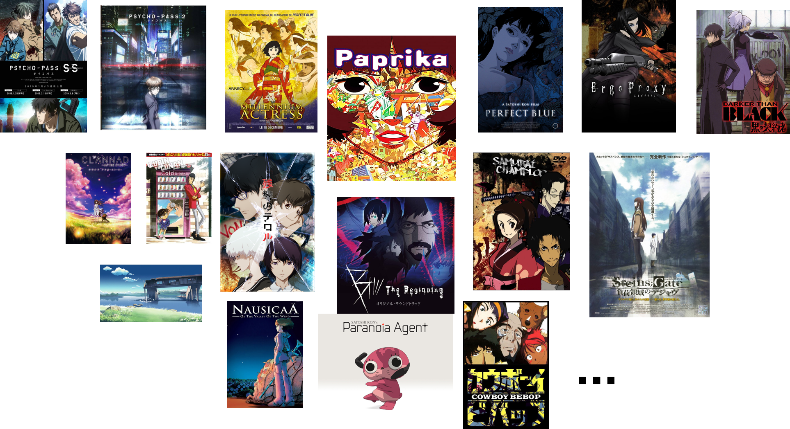

|
Xiong, Haipeng
|
|
Ph.D. student at National University of Singapore,
E-mail: haipeng [at] comp.nus.edu.sg
|
|
About me
I am currently a second-year Ph.D. student in the School of Computing, National University of Singapore. I love Mathematics and interpretable models, always trying to discover the underlying mechanism of the problem and building mathematical models with the discovery.
Research
My current research focus is the learning pattern and theory in image-based regression problem
(including object counting, depth completion, age estimation), domain adaptation and Graph Neural Networks. My research interests include:
Deep Learning
Regression Models
Math Modeling
Machine Learning
News
A paper "From Open Set to Closed Set: Supervised Spatial Divide-and-Conquer for Object Counting [paper]" is accepted by IJCV in 2023.
An awardee of Google PhD Fellowship 2022.
A paper "Discrete-Constrained Regression for Local Counting Models" is accepted by ECCV 2022.
Recent publications
Haipeng Xiong, Hao Lu, Chengxin Liu, Liang Liu, Zhiguo Cao, and Chunhua Shen. From Open Set to Closed Set: Counting Objects by Spatial Divide-and-Conquer. In Proceedings of International Conference on Computer Vision(ICCV), 2019.
[paper] [code]
Haipeng Xiong, Zhiguo Cao, Hao Lu, Simon Madec, Liang Liu, Chunhua Shen. TasselNetv2: in-field counting of wheat spikes with context-augmented local regression networks. Plant Methods, 15(1): 150, 2019.
[paper] [code]
Liang Liu, Hao Lu, Haipeng Xiong, Ke Xian, Zhiguo Cao, Chunhua Shen. Counting Objects by Blockwise Classification. IEEE Transactions on Circuits and Systems for Video Technology, 30(10):3513-3527, 2019.
Xin Xiong*, Haipeng Xiong*, Ke Xian, Chen Zhao, Zhiguo Cao, Xin Li. Sparse-to-Dense Depth Completion Revisited: Sampling Strategy and Graph Construction. In Proceedings of European Conference on Computer Vision (ECCV), 2020.
Jian Cheng*, Haipeng Xiong*, Zhiguo Cao, Hao Lu. Decoupled Two-Stage Crowd Counting and Beyond. IEEE Transactions on Image Processing, 30: 2862-2875, 2021.
[paper] [code]
Liang Liu, Hao Lu, Hongwei Zou, Haipeng Xiong, Zhiguo Cao, Chunhua Shen. Weighing Counts: Sequential Crowd Counting by Reinforcement Learning. In Proceedings of European Conference on Computer Vision (ECCV), 2020.
Liang Liu, Zhiguo Cao, Hao Lu, Haipeng Xiong, Chunhua Shen. NSSNet: Multi-Scale Object Counting with NonScale Suppression. IEEE Transactions on Intelligent Transportation Systems, 2020.
Haipeng Xiong, Hao Lu, Chengxin Liu, Liang Liu, Zhiguo Cao, Chunhua Shen. From Open Set to Closed Set: Supervised Spatial Divide-and-Conquer for Object Counting. International Journal of Computer Vision (IJCV), 1-19, 2023.
[paper] [code]
Haipeng Xiong, Angela Yao. Discrete-Constrained Regression for Local Counting Models. In Proceedings of European Conference on Computer Vision (ECCV), 2022.
[paper] [code]
Note: * indicates equal contribution.
Full list of publications in Google Scholar.
Academic service
Reviewer
Competitions and awards
2022
2021
2020
2019
2018
2017
National Scholarship for Encouragement
Meritorious Winner in Interdisciplinary Contest In Modeling, America
4th place in long jump, School Sports Meeting
2016
National Scholarship for Encouragement
The First Prize in National College Students Mathematical Competition, China
2015
National Scholarship
Excellent student for academic performance
The First Prize in National College Students Mathematical Competition, China
2014
Activities
Teaching Assistant, National University of Singapore, 08.2021-12.2021 Teaching Assistant, National University of Singapore, 08.2022-12.2022
Favourite things
When I am free, I like watching animations&movies, reading books, cooking, swiming and jogging. My favorite animations include Accel World, B: The Beginning, Castle in the Sky, Clannad, Cells at Work, Colorful, Cowboy Bebop, Dark than Black, Ergo Proxy,
Forest of Piano, 5 Centimeters per Second, Gangsta, Ghost Hunt, Ghost in the Shell 2: Innocence, Golden Boy, Gundam 00, Harmony,
I Want to Eat Your Pancreas, Jin-Roh, King of Thorn, Library Wars, Looking Up At The Half-Moon, Lupin III: The Castle of Cagliostro, Mermaid Forest, Millennium Actress,
My Neighbor Totoro, Myself&Yourself, Naruto, One Punch Man, Only Yesterday, Paprika, Paranoia Agent, Perfect Blue, Psycho Pass,
Relife, Samurai Chaploo, She and Her Cat, Spirited Away, Tales from Earthsea, The Case of Hana & Alice, The Cat Returns,
The Garden of Words,
The Girl Who Leapt Through Time, The Ocean Waves, The Place Promised in Our Early Days,
The Secret World of Arrietty, Vampire Hunter D, Vampire in the Garden, Voices of a Distant Star, ... (maybe too many ^v^)

A brief cv.
|